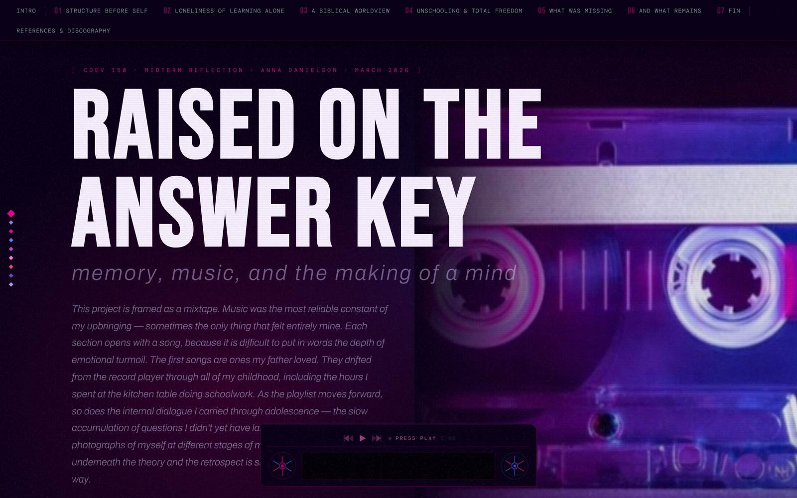

Schools and learning
“An answer key determined truth.”
The correspondence model rewarded precision. One wrong answer felt like a failure, not just academic, but personal. A CDEV 150 midterm built as a mixtape: growing up homeschooled, told through the songs that carried me.
Raised on the answer key
Midterm project · CDEV 150 · March 2026
Read →Schools and learning
“I want to craft learning with students, not just teach at them.”
I know what it feels like to be alone and isolated, to feel misunderstood by people who held power over me. I want to create the opposite of that in my classroom.
Designing a positive and nurturing school culture
Freewrite · Spring 2026
Read →Schools and learning
“They understood that learning was a condition of freedom, not a luxury.”
People sacrificed so much to build public schooling in the first place. We cannot take it for granted, and communities need to come together and fight back.
Du Bois and the people who built public schools
Discussion reflection · Summer 2026
Read →Families, rights, and belonging
“The Declaration is fair at its root, but toothless where it counts.”
Rights aren’t something you earn or something the government hands down when it feels generous. You have them because you are human.
The floor, not the ceiling: the Universal Declaration of Human Rights
Essay · July 2026
Read →Families, rights, and belonging
“If one citizen’s belonging is up for debate, then everyone’s should be.”
Before the Treaty of Guadalupe Hidalgo, much of the United States was Mexico, and before that it was Native land. The US government made these people strangers in their own homes through legal violence.
The ways U.S.-born citizens talk back against the anchor baby narrative
Essay · Summer 2026
Read →Power and movements
“Am I soothing the symptom, or changing what makes the help necessary?”
Charity can feed a family tonight, but it can’t touch why they’re hungry. For her, the real work was reform, changing the conditions that keep people poor.
Relief or reform: Jane Addams and Hull-House
Discussion reflection · Summer 2026
Read →Power and movements
“The colonizing mission reached past roads, sugar contracts, and English classes and went after consciousness itself.”
Once you take that seriously, sterilization stops looking like a separate horror and starts looking like the same project reaching the body.
Constrained choice: sterilization and Americanization in Puerto Rico
Reflection · Summer 2026
Read →Power and movements
“I have stopped thinking of peace as a destination and started thinking of it as a direction.”
These are not items on a list I expect to check off. They are the horizon I steer by, the fixed points that tell me whether I am walking in the right direction.
Peace as a direction
Reflection · Summer 2026
Read →